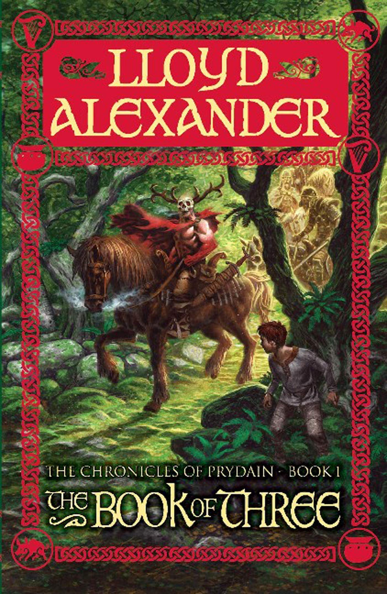
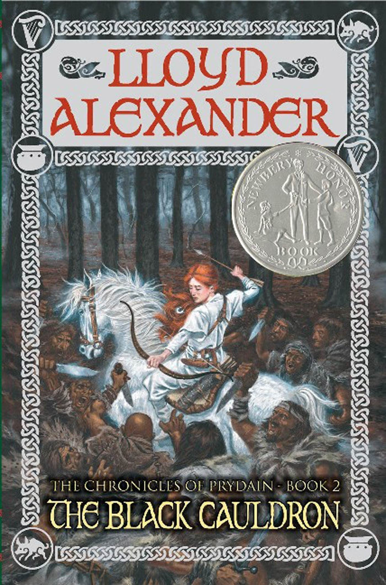
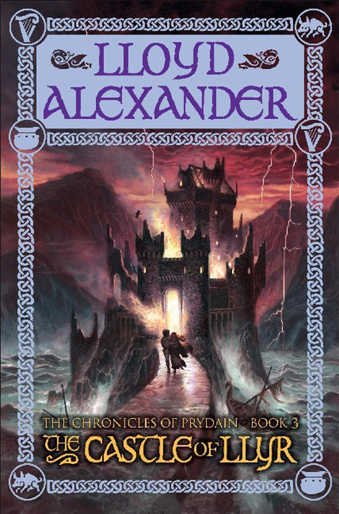
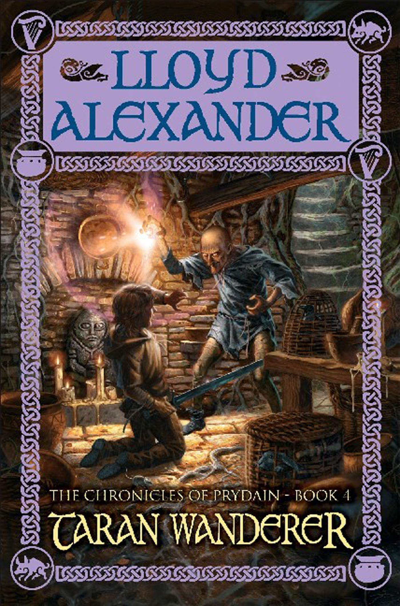
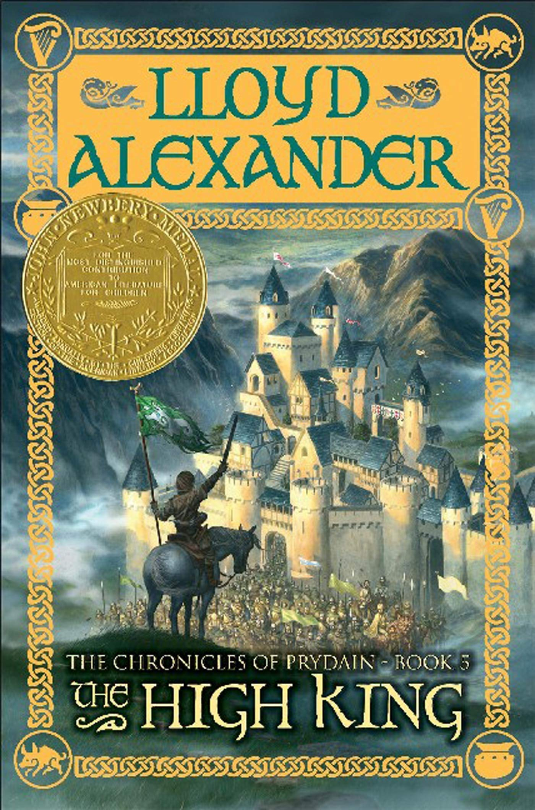

The Story of Prydain
The Book of Three
Taran, an impulsive Assistant Pig-Keeper, dreams of adventure beyond his quiet life at Caer Dallben tending to the oracular pig, Hen Wen. When Hen Wen mysteriously flees, Taran sets out to find her, only to stumble into a larger conflict involving the monstrous Horned King and his army. Joined by a sharp-tongued princess named Eilonwy, a furry creature called Gurgi, and a boastful bard named Fflewddur Fflam, Taran must navigate a dangerous land filled with dark magic and ancient prophecies as he seeks to protect Prydain from looming evil.
The Black Cauldron
As the forces of Arawn Death-Lord grow stronger, Taran joins Prince Gwydion and his companions on a perilous mission to seize the Black Cauldron, a sinister artifact capable of creating an army of undead warriors known as the Cauldron-Born. Alongside Eilonwy, Gurgi, and Fflewddur, Taran faces treacherous landscapes and new foes, including three cunning enchantresses and the scheming King Morgant. The quest tests Taran’s courage and convictions, forcing him to confront the cost of power and the weight of difficult choices in the fight to save Prydain.
The Castle of Llyr
Taran and his friends escort Princess Eilonwy to the Isle of Mona for training as a proper lady, a task she’s less than thrilled about. But their journey takes a dangerous turn when Eilonwy is ensnared by Achren, a malevolent sorceress with ties to her past. As Taran, Gurgi, and Fflewddur race to rescue her, they encounter new allies like the bumbling Prince Rhun and face challenges that test their loyalty and resourcefulness. The group must unravel Achren’s schemes before Eilonwy’s heritage unleashes a new threat upon Prydain.
Taran Wanderer
Yearning to discover his true parentage and place in the world, Taran embarks on a solitary journey across Prydain, leaving behind his companions. Along the way, he meets craftsmen, farmers, and warriors who teach him the value of hard work, humility, and community. But his quest for identity grows complicated as he faces dangers like the ruthless brigand Dorath and grapples with unsettling truths about his past. Through trials and self-discovery, Taran begins to understand that true worth may not lie in noble blood but in the choices he makes.
The High King
With Prydain on the brink of collapse under Arawn’s growing power, Taran rallies his companions — Eilonwy, Fflewddur, Gurgi, and others — for a final stand against the Death-Lord’s forces. As alliances fray and enemies strike from within, Taran must lead a desperate campaign to unite the land’s fractured peoples, including the Fair Folk and the stubborn lords of the Free Commots. The stakes have never been higher, and the journey pushes Taran and his friends to their limits as they confront betrayal, sacrifice, and the true meaning of heroism in the climactic struggle for Prydain’s future.